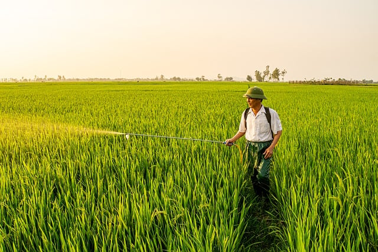

The image shows a farmer working in a lush green paddy field. He is spraying pesticides or fertilizer on the rice plants using a long sprayer rod connected to a backpack tank. The field is wide and stretches far into the distance, with tall green rice plants growing evenly. The farmer is wearing a hat, a white shirt, and long pants to protect himself from the sun. The lighting suggests it is either early morning or late afternoon, giving the scene a warm golden color. The environment looks calm and rural, with a few trees visible on the horizon.
